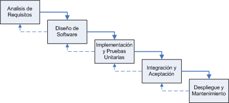
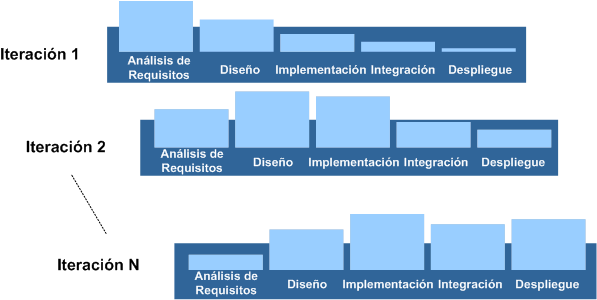
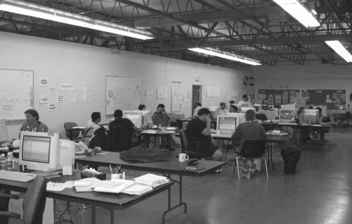
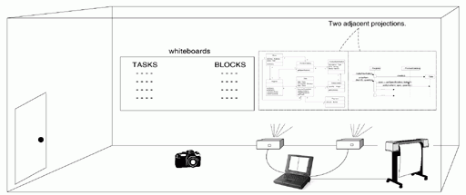

Metodologías Ágiles
Introducción
Dentro del sector que nos movemos, donde los proyectos que se realizan muy pocas veces acaparan el calificativo de proyecto a largo plazo, las metodologías que se deben aplicar deben dejar de lado los formalismos de metodologías clásicas de desarrollo para guiarse por los resultados a corto/medio plazo, pero sin perder de vista la calidad.
El mercado actual es impredecible, y no podemos saber como evolucionarán con el tiempo las aplicaciones. las condiciones del mercado cambian, también lo hacen las necesidades de nuestros clientes. Si nuestra fase de requisitos se alarga podemos provocar la perdida del principio de oportunidad por parte de nuestro cliente.
Dado este dinamismo, existe una tendencia a la perdida de la formalidad y el rigor, buscando el equilibrio entre una documentación extensa respecto a una documentación útil.
Dada esta necesidad, durante los últimos 5 años han ido apareciendo diferentes metodologías, conocidas como ágiles, que dan mayor valor al individuo, a la colaboración con el cliente y al desarrollo incremental del software con iteraciones muy cortas. Este enfoque está mostrando su efectividad en proyectos con requisitos muy inestables y cuando se exige reducir drásticamente los tiempos de desarrollo pero manteniendo una alta calidad. Las metodologías ágiles están revolucionando la manera de producir software, y a la vez generando un amplio debate entre sus seguidores y quienes por escepticismo o convencimiento no las ven como alternativa para las metodologías tradicionales.
Pero antes de ver estás nuevas metodologías, entremos en antecedentes y demos un pequeño repaso al ciclo de vida clásico de desarrollo del software.
Ciclo de Vida Clásico
El ciclo de vida clásico, también conocido como modelo secuencial o en cascada, consta de las siguientes fases:
- Análisis de los requisitos: Los servicios, restricciones y objetivos son establecidos con los usuarios del sistema. Se busca hacer esta definición en detalle.
- Diseño de software: Se divide el sistema en sistemas de software o hardware. Se establece la arquitectura total del sistema. Se identifican y describen las abstracciones y relaciones de los componentes del sistema.
- Implementación y pruebas unitarias: Construcción de los módulos y unidades de software. Se realizan pruebas de cada unidad.
- Integración y aceptación del sistema: Se integran todas las unidades. Se prueban en conjunto. Se entrega el conjunto probado al cliente.
- Despliegue y mantenimiento: Generalmente es la fase más larga. El sistema es puesto en marcha y se realiza la corrección de errores descubiertos. Se realizan mejoras de implementación. Se identifican nuevos requisitos.
Cada fase tiene como resultado documentos que deben ser aprobados por el usuario. Además, una fase no comienza hasta que termine la fase anterior y generalmente se incluye la corrección de los problemas encontrados en fases previas. La interacción entre fases puede observarse en la siguiente figura.

En la práctica, este modelo no es lineal, e involucra varias iteraciones e interacción entre las distintas fases de desarrollo. Algunos problemas que se observan en el modelo de cascada son:
- Las iteraciones son costosas e implican rehacer trabajo debido a la producción y aprobación de documentos.
- Aunque son pocas iteraciones, es normal congelar parte del desarrollo y continuar con las siguientes fases.
- Los problemas se dejan para su posterior resolución, lo que lleva a que estos sean ignorados o corregidos de una forma poco elegante.
- Existe una alta probabilidad de que el software no cumpla con los requisitos del usuario por el largo tiempo de entrega del producto.
- Es inflexible a la hora de evolucionar para incorporar nuevos requisitos. Es difícil responder a cambios en los requisitos.
Este modelo sólo debe usarse si se entienden a plenitud los requisitos, y estos no van a ser modificados. Pero, hemos de tener en cuenta que:
Desarrollo Iterativo
El desarrollo evolutivo e iterativo, en contraste con el desarrollo secuencial o en cascada, implica la programación y prueba de sistemas parciales mediante ciclos repetitivos, de modo que los cambios son "fácilmente" asimilados. También asumen que el desarrollo comienza incluso antes de que todos los requisitos hayan sido detallados. El elemento clave para aclarar y refinar las especificaciones, que no dejan de cambiar y/o evolucionar, es la retroalimentación.
Debemos confiar en pequeñas pero rápidas iteraciones de desarrollo, retroalimentación y adaptación del software para refinar los requisitos y el diseño. El resultado de cada iteración es un trozo de sistema que está probado, integrado y que se puede utilizar, y para ello cada iteración incluye su propio análisis de requisitos, diseño, implementación y prueba.
El hecho de que con cada iteración tengamos una visión parcial del sistema que se puede utilizar no significa que esté listo para entrar en producción. Es importante destacar que ya en la primera iteración se genera código, el cual es utilizable. No obstante, el sistema no cumplirá los requisitos mínimos hasta que hayan pasado muchas iteraciones, por ejemplo, 10 o 15 iteraciones.
Las iteraciones timeboxed se caracterizan por fijar la duración de cada una de las iteraciones y no permitir modificarla. La duración total de un proyecto también puede ser timeboxed. Si finalmente llegamos a la conclusión de que las peticiones (el ámbito) para la iteración no se pueden cumplir dentro del timebox, entonces en vez de alargar la finalización de la iteración, se debe reducir el ámbito (recolocando las peticiones con menor prioridad de nuevo en la lista de peticiones), para que el sistema parcial siga creciendo y siempre finalice en un estado estable y probado en la fecha final de la iteración originalmente planeada.
Así pues, el sistema crece de forma incremental con el tiempo, iteración tras iteración, por ello esta aproximación se conoce como desarrollo iterativo e incremental.

Existe una tendencia a minimizar los tiempos de análisis en beneficio de reducir tiempos de desarrollo. Ya antes hemos comentado que el cliente quiere ver, tocar, el producto cuanto antes.
Movimiento Ágil
Los métodos de desarrollo ágil promueven un desarrollo evolutivo y plazos de entrega con periodos de tiempo cortos y fijos, mediante una planificación dinámica, realizando entregas incrementales, e incluye otras prácticas que incentivan la agilidad (respuesta rápida y flexible al cambio). Si los métodos ágiles tienen un lema es "abrazar los cambios" (embrace change).
Un proceso es ágil cuando el desarrollo de software es incremental (entregas pequeñas de software, con ciclos rápidos), cooperativo (cliente y desarrolladores trabajan juntos constantemente con una cercana comunicación), sencillo (el método en sí mismo es fácil de aprender y modificar, bien documentado), y adaptable (permite realizar cambios de último momento). Es decir, se trata de una ingeniera del software ligera que mantiente las mínimas actividades básicas de la ingenieria del software que conducen a la construcción y entrega del proyecto.
La filosofia ágil promueve equipos de proyecto pequeños y con alta motivación, donde el cliente forma parte del equipo de desarrollo, formando un equipo auto-organizado y que controla su propio destino. Un equipo ágil fomenta la comunicación y la colaboración entre todos los que trabajan en él.
En 2001 un grupo de expertos interesados en los método iterativos y ágiles se reunieron para encontrar un fondo común, definiendo los valores y principios que permitirían a los equipos de desarrollo trabajar de una forma veloz y sensible al cambio. De aquí nació la Alianza ágil (www.agilealliance.com) con un manifiesto (declaración pública de principios e intenciones) y una serie de principios.
El manifiesto y los principios han sido, y son, la base de las metodologías ágiles, de modo que la gestión ágil de proyectos, el modelado ágil, las técnicas ágiles, etc... son una consecuencia de dicha reunión.
El Manifiesto Ágil
Individualidades e interacciones frente a procesos y herramientas
Software que funciona frente documentación comprensible
Colaboración del cliente frente a la negociación de un contrato
Respuesta al cambio frente al seguimiento estricto de un planning
Esto significa que mientras los elementos de la derecha nos aportan valor, hemos de valorar más los elementos de la izquierda (en negrita).
Firmado por Kent Beck, Mike Beedle, Arie van Bennekum, Alistair Cockburn, Ward Cunningham, Martin Fowler, James Grenning, Jim Highsmith, Andrew Hunt, Ron Jeffries, Jon Kern, Brian Marick, Robert C. Martin, Steve Mellor, Ken Schwaber, Jeff Sutherland y Dave Thomas.
Ver www.agilemanifesto.org
A continuación se detalla el manifiesto:
- Individualidades e interacciones frente a procesos y herramientas
La gente, y su interacción, es el principal factor de éxito de un proyecto software. Si se sigue un buen proceso de desarrollo, pero el equipo falla, el éxito no está asegurado; sin embargo, si el equipo funciona, es más fácil conseguir el objetivo final, aunque no se tenga un proceso bien definido.
Un buen desarrollador no es necesariamente un gran programador. Un buen desarrollador puede ser un programador decente que trabaja bien con otros. Trabajar bien con otros desarrolladores, interactuar y comunicarse, son destrezas tan o más importantes que el propio nivel de programación. Así pues, no se necesitan desarrolladores brillantes, sino desarrolladores que se adapten bien al trabajo en equipo.
Así mismo, las herramientas (compiladores, depuradores, control de versiones, etc.) son importantes para mejorar el rendimiento del equipo, pero el disponer más recursos que los estrictamente necesarios también puede afectar negativamente.
En cuanto a las herramientas, un buen consejo es empezar poco a poco. No hemos de asumir que una herramienta que no hemos probado se nos queda pequeña. En vez de comprar la herramienta más nueva, completa y cara, busca una gratuita y utilizala hasta que compruebes que se te ha quedado pequeña. Antes de comprar las licencias de equipo para la mejor herramienta CASE, utiliza pizarras y grafos en papel hasta que compruebes que necesitas más. Por lo tanto, no asumas que la mejor y más grande herramienta automaticamente te ayudará a ser mejor. Normalmente, entorpecen más de lo que ayudan.
Como conclusión, comentar que es más importante construir un buen equipo que construir el entorno. Muchas veces se comete el error de construir primero el entorno y esperar que el equipo se adapte automáticamente. Es mejor crear el equipo y que éste configure su propio entorno de desarrollo en base a sus necesidades.
- Software que funciona frente documentación comprensible
Aunque se parte de la base de que el software sin documentación es un desastre, la regla a seguir es "no producir documentos a menos que sean necesarios de forma inmediata para tomar un decisión importante". Por descontado, el equipo se ve en la necesidad de producir documentos legibles por humanos que describa el sistema y las decisiones tomadas durante el diseño, ya que el código no el el medio ideal para comunicar la estructura y las intenciones del sistema.
Sin embargo, demasiada documentación es peor que poca. Los documentos enormes consumen mucho tiempo en su creación e incluso más tiempo en tenerlos actualizados. Si no se mantienen sincronizados con el codigo se convierten en grandes y complicadas mentiras, fomentando dudas y confusion en su empleo.
Siempre es una buena idea escribir y mantener un documento estructural y de intenciones (libro blanco), pero dicho documento debe ser corto y notable, donde corto significa no más de 20 páginas, y notable que trata las intenciones de diseño trabajadas y únicamente las estructuras de más alto nivel del sistema.
Y si todo lo que tenemos es un libro blanco, ¿cómo formamos a los nuevos integrantes del equipo a trabajar en el proyecto? Trabajando muy cerca con ellos. Transferimos nuestro conocimiento sentandonos junto a ellos y ayudándolos, resolviendo todas las dudas que tengan. Así pues, les hacemos parte del equipo mediante un entrenamiento cercano y la interacción experto <-> novato.
Los 2 mejores documentos para transferir la información a los nuevos integrantes son el código fuente y el propio equipo. El código no miente sobre lo que hace. Puede ser dificil extraer las decisiones e intenciones del código, pero el código es la única fuente de información unívoca. Los integrantes del equipo de desarrollo mantienen el mapa mental del sistema en su completa evolución, de modo que no hay un modo más rápido y eficiente de transferir este mapa mental al resto de integrantes que la interaccion frente a frente.
Pero al final del dia, es el software producido por el equipo lo que utilizará el usuario, y no la documentación. Por lo tanto, la documentación no debe ser un objetivo en sí. De hecho, debe ser un medio de soporte para el producto real - el software.
- Colaboración del cliente frente a la negociación de un contrato
Las características particulares del desarrollo de software hace que muchos proyectos hayan fracasado por intentar cumplir unos plazos y unos costes preestablecidos al inicio del mismo, según los requisitos que el cliente manifestaba en ese momento. Por ello, se propone que exista una interacción constante entre el cliente y el equipo de desarrollo. Esta colaboración entre ambos será la que marque la marcha del proyecto y asegure su éxito.
El software no se puede pedir del mismo modo que realizamos el pedido de un producto. No podemos escribir la descripcion del software que queremos y esperar a que alguien lo desarrolle dentro de un calendario cerrado y un precio fijo. Las ocasiones en que se ha tratado los proyecto software de este modo y que han fracasado son innumerables. A veces los fallos son espectaculares.
En muy tentador para los empresarios decirles a su equipo de desarrollo cuales son sus necesidades y esperar que el equipo se vaya durante un rato y vuelva con un sistema que cumple sus necesidad. Pero este modo de trabajar tiende a fallar y tener una calidad pobre.
Los proyectos exitosos implican la retroalimentación del cliente a un ritmo constante. Más que depender de un contrato o una sentencia de trabajo, el cliente trabaja codo con codo con el equipo de desarrollo, ofreciendo la retroalimentación frecuente a sus esfuerzos.
Un contrato que especifica los requisitos, la planificación y el coste del proyecto falla por su base. En la mayoría de los casos, los términos especificados pierden todo el sentido antes de que el proyecto se complete. Los mejores contratos son aquellos que determinan que el cliente y el equipo de desarrollo deben trabajan juntos.
- Respuesta al cambio frente al seguimiento estricto de un planning
La habilidad de responder a los cambios que puedan surgir a los largo del proyecto (cambios en los requisitos, en la tecnología, en el equipo, etc.) determina también el éxito o fracaso del mismo. Cuando hacemos una planificación, debemos asegurarnos que nuestros plannings son flexibles y estan preparados para adaptararse a los cambios en el negocio y las tecnologias.
El curso de un proyecto software no se puede predecir a largo plazo. Existen demasiadas variable a tener en cuenta. Simplemente, no somos suficientemente buenos para estimar el coste de un proyecto a largo plazo, debido a que el entorno de negocio en el cual se mueve el software va a modificarse a lo largo del desarrollo. Es dificil escribir especificaciones de requisitos, ya que el cliente va a quere cambiar los requisitos en cuanto vea que la aplicación empieza a funcionar.
Los gestores novatos tienden a crear diagramas de Pert y Gantt de la totalidad del proyecto y ponerlos en la pared más grande de la empresa. Les hace sentir que tiene control sobre el proyecto. Pueden llevar el control de las tareas individuales y tacharlas conforme se completan. Pueden comparar las fechas realies con las planificaciones y actuar en consonancia.
Pero lo que realmente ocurre es que la estructura del gráfico se degrada. Conforme el equipo conoce más profundamente el sistema, y el cliente conoce sus propias necesidades reales, algunas tareas del gráfico se convierten en innecesarias. Se descubrirán nuevas tareas que se deberán añadir. En resumen, la planificación sufrirá cambios tanto en la forma como en las fechas.
Una mejor estrategia de planificación es realizar planificaciones detalladas para las siguientes semanas, planificaciones menos detalladas para los siguientes meses, y planificaciones rudimentarias para las posteriores. Lo que debemos saber es lo que tenemos que hacer en las siguiente semanas. En cambio, debemos conocer los requisitos con los que trabajaremos en los siguiente meses, y por último, tener una vaga idea de lo que será el sistema dentro de un año.
Esta resolución descendiente de la planificación significa que sólo estamos invirtiendo esfuerzos en una planificación detallada para aquellas tareas que son inmediatas. Una vez que la planificación esta hecha, cambiarla se complica ya que el equipo tiene muchos compromisos y una velocidad adecuada. Pero como la planificacion solo gobierna el proyecto durante unas semanas, el resto del planning permance flexible. Así pues, la parte de planificación que no esta detallada puede sufrir modificaciones con cierta facilidad.
Los Principios Ágiles
Los valores anteriores inspiran los doce principios del manifiesto. Son características que diferencian un proceso ágil de uno tradicional. El objetivo de estos principios se divide en 2:
- Los principios se definen para ayudar a las personas a que comprendan mejor de que trata esto del desarrollo de software ágil.
- Los principios se pueden utilizar para determinar si un desarrollador esta siguiendo una metodología agil o no.
Cabe destacar que estos principios no especifican un método, sino que definen un conjunto de guías que cualquier enfoque que quiera estar bajo el paraguas "ágil" debe cumplir.
Los dos primeros principios son generales y resumen gran parte del espíritu ágil. El resto tienen que ver con el proceso a seguir y con el equipo de desarrollo, en cuanto metas a seguir y organización del mismo.
-
La prioridad absoluta es
satisfacer al cliente cuanto antes mejor, y de forma continuada
entregar software útil que le reporte valor.
Un proceso es ágil si a las pocas semanas de empezar ya entrega software que funcione aunque sea rudimentario. El cliente decide si pone en marcha dicho software con la funcionalidad que ahora le proporciona o simplemente lo revisa e informa de posibles cambios a realizar. -
Apreciar los cambios de
requisitos, incluso en fases tardías del desarrollo. Los
procesos ágiles aprovechan los cambios para que el cliente
tome ventaja competitiva.
Este principio es una actitud que deben adoptar los miembros del equipo de desarrollo. Los cambios en los requisitos deben verse como algo positivo. Les va a permitir aprender más, a la vez que logran una mayor satisfacción del cliente. Este principio implica además que la estructura del software debe ser flexible para poder incorporar los cambios sin demasiado coste añadido. El paradigma orientado a objetos puede ayudar a conseguir esta flexibilidad. -
Entregar frecuentemente software que funcione, desde un par
de semanas a un par de meses, con el menor intervalo de tiempo
posible entre una entrega y la siguiente
Las entregas al cliente se insiste en que sean software, no planificaciones, ni documentación de análisis o de diseño. -
La gente del negocio (el cliente) y los desarrolladores deben
trabajar juntos a lo largo del proyecto
El proceso de desarrollo necesita ser guiado por el cliente, por lo que la interacción con el equipo es muy frecuente. -
Construir proyectos en torno a individuos motivados. Darles
el entorno y el apoyo que necesitan y confiar en ellos para
conseguir el trabajo
La gente es el principal factor de éxito, todo los demás (proceso, entorno, gestión, etc.) queda en segundo plano. Si cualquiera de ellos tiene un efecto negativo sobre los individuos debe ser cambiado. -
El diálogo cara a cara es el método más
eficiente y efectivo para comunicar información dentro de un
equipo de desarrollo
Los miembros de equipo deben hablar entre ellos, éste es el principal modo de comunicación. Se pueden crear documentos pero no todo estará en ellos, no es lo que el equipo espera. -
La medida principal de progreso es el software que funciona
El estado de un proyecto no viene dado por la documentación generada o la fase en la que se encuentre, sino por el código generado y en funcionamiento. Por ejemplo, un proyecto se encuentra al 50% si el 50% de los requisitos ya están en funcionamiento. -
Los procesos ágiles promueven un desarrollo
sostenible. Los promotores, desarrolladores y usuarios deberían
ser capaces de mantener una paz constante
No se trata de desarrollar lo más rápido posible, sino de mantener el ritmo de desarrollo durante toda la duración del proyecto, asegurando en todo momento que la calidad de lo producido es máxima. -
La atención continua a la calidad técnica y al
buen diseño aumentan la agilidad
Producir código claro y robusto es la clave para avanzar más rápidamente en el proyecto. -
La simplicidad (arte de maximizar la cantidad de trabajo no
realizado) es esencial
Tomar los caminos más simples que sean consistentes con los objetivos perseguidos. Si el código producido es simple y de alta calidad será más sencillo adaptarlo a los cambios que puedan surgir. -
Las mejores arquitecturas, requisitos y diseños surgen
de los equipos de trabajo organizados por sí mismos
Todo el equipo es informado de las responsabilidades y éstas recaen sobre todos sus miembros. Es el propio equipo el que decide la mejor forma de organizarse, de acuerdo a los objetivos que se persigan. -
En intervalos regulares, el equipo reflexiona respecto a cómo
llegar a ser más efectivo, y según esto ajusta su
comportamiento
Puesto que el entorno está cambiando continuamente, el equipo también debe ajustarse al nuevo escenario de forma continua. Puede cambiar su organización, sus reglas, sus convenciones, sus relaciones, etc., para seguir siendo ágil.
Algunos de estos principios pueden parecer obvios, mientras que otros más polémicos. A simple vista, son bastante genéricos ("Apreciar los cambios"). Sin embargo, se han definido para guiar a las metodologías ágiles, más que para ser realmente una metodología por si solos. Por ejemplo, una metodologia agil deberia promover la entrega frecuente de sistemas que funcionan más que una gran entrega (tipo big bang). Un modo de interpretar esto es que un enfoque iterativo e incremental es mejor que el enfoque tradicional de cascada.
Por tanto, las metodologías ágiles intentan concebir los métodos que cambian:
- de procesos pesados a ligeros
- de objetivos orientados a documento a orientados al código
- de métodos predictivos a adaptativos
- de actividades orientadas al proceso a orientadas a las personas.
Conceptos Ágiles
Todas las metodologías ágiles compartes una serie de conceptos y/o técnicas que se repiten o utilizan en más de una metodología. Queremos destacar:
-
Abrazar los Cambios: hay que afrontar los cambios como aliados, y no como enemigos, ya que los cambios permiten mayor creatividad y aportan valor al negocio más rápidamente.
-
Entregas Frecuentes: para realizar entregas frucuentes, debemos planificar muchas entregas con periodos cortos. De este modo, vamos a forzar la implementación temprana de las funciones de mayor prioridad, entregando valor al cliente rápidamente y provocando que los requisitos salgan a la superficie de un modo continuo.
-
Diseño Simple: partiendo de la premisa anterior de que la simplicidad es el arte de minimizar el trabajo, debemos diseñar para la batalla, no para la guerra. Muchas veces realizamos sobreingeniera y complicamos un problema el cual es sencillo, o nos dedicamos a resolver un problema que no es el actualmente desarrollado. Así pues denemos tener presente principios como:
- Principio KISS (Keep It Simple, Stupid) - Wikipedia
- Principio YAGNI (You Aren't Going to Need It) - Wikipedia
Todo esto sin perder de vista que los cambios son inevitables, y que planificar para funcionalidades futuras es malgastar esfuerzos.
-
Refactorización: consiste en eestructurar el software para eliminar la duplicación de código, mejorar la comunicación, simplificar el código, y añadir flexibilidad sin modificar el comportamiento. Los IDEs actuales ofrecen diferentes tipos de refactorizaciones que nos permiten simplificar continuamente el diseño, rediseñando en caliente. El principio a tener en mente es:
- Principio DRY (Don't Repeat Yourself) - Wikipedia
-
Desarrollo Dirigido por las Pruebas (TDD): tambien conocido como Test-First, consiste en los siguientes pasos:
- Codificar la prueba
- Codificar la implementación
- Ejecutar la prueba
De este modo, todos los módulo van a ser probados, y enfocamos el diseño de cada método como una caja negra, entradas y salidas, para posteriormente centrarnos en la implementación.
Las pruebas de los módulos y de los métodos se realizan incrementalmente por los desarrolladores y los clientes antes y durante la codificación.
-
Programación en Parejas: 2 programadores trabajan codo con codo en un ordenador, compartiendo el teclado. Esto exige una colaboración continua en el mismo diseño, algoritmo, codificación y pruebas.
-
Conocimiento Tácito: la agilidad se consigue estableciendo y actualizando el conocimiento del proyecto en las cabezas de los participantes, no en papel. Así, se evitan los documentos innecesarios (conocimiento explicito)
-
Retrospectiva: se trata de una reunión post-iteración para evaluar la efectividad del trabajo realizado (qué fue bien y qué fue mal), métodos utilizados, y estimaciones. Esta práctica fomenta el aprendizaje y mejora las estimaciones para futuras iteraciones
Entraremos en detalle en algunos de estos conceptos conceptos en las posteriores sesiones de Programación eXtrema y Prácticas Ágiles.
Entorno Ágil
El entorno del proyecto incluye el espacio físico y las herramientas software utilizadas por los desarrolladores.
Entre las prácticas utilizadas dentro de un entorno ágil debemos destacar:
-
Integraciones Continuas: Consiste en la continua integracion (CI) 24/7 de todo el código fuente del sistema. En cuanto un cambio se sube al gestor de versiones, se construye el sistema, se despliega sobre el servidor y se ejecutan las pruebas.
En el caso de que las pruebas fallen, se pueden realizar diversas acciones, como enviar mails al arquitecto y al último desarrollador que ha subido el cambio al sistema. Dentro de un proyecto Java, la media de construccion es de 15 a 30 minutos. Esta práctica nos asegura que nuestro sistema integra los cambios cuanto antes.
En la cuarta sesión de este módulo estudiaremos la herramienta CruiseControl.
-
Wikis de Proyecto: El uso de wikis permite a los desarrolladores tener un respositorio compartido de conocimiento y facilitar la comunicación de actividades y tareas. Tenemos versiones sencillas como Usemod o más completas como XWiki o TWiki.
-
Herramientas CASE e Ingenieria Inversa: Las herramientas CASE que soportan UML ofrecen Ingenieria Directa, mediante la generación de codigo a partir de los diagrams, e Ingenieria Inversa, con la generación de diagramas a partir del codigo.
Dentro de los proyecto ágiles, las herramientas CASE se utilizan casi exclusivamente para la ingenieria inversa, ofreciendo mecanimos visuales para la comunicación entre los integrantes del equipo.
Las herramientas comerciales más utilizas son Borland Together y Rational Software Architect; mixtas/gratuitas tenemos Omondo y Poseidon UML y StarUML.
-
Habitación Común: Todos los desarrollades del equipo deben compartir una sala común, para que se produzca una comunicación directa entre los integrantes. Para preservar la intimidad, pueden existir espacios privados separados que los desarrolladores pueden utilizar durante las tareas no relacionadas con el desarrollo.
Además, es aconsejable situar la mesas en el centro de la sala, para dejar las paredes libres

-
Paredes por Pizarras: El modelado ágil promueve utilizar pizarras belleda y para ello, necesitamos utilizar todo el espacio disponible (podemos situar las mesas en el centro de la sala). Mediante las pizarras y rotuladores de pizarra, las paredes se convierten en otro mecanismo de comunicación.
-
Camaras Digitales y Proyectores: Agilidad es sinonimo de velocidad, simplicidad y claridad. En vez de tener de tomar notas de los modelos diagramados en las paredes, una simple fotografia captura toda la información y nos permite imprimirla o publicarla en nuestro wiki.
Además, el uso de proyectores donde visualizar las fotografias previas y los diagramas obtenidos por ingenieria inversa también facilitan el trabajo.
Podemos ver ejemplos de entornos agiles en
En resumen, un entorno ágil se pueden resumir en el siguiente gráfico:

Metodología Ágiles
En Resumen
El aspecto comun de todas las metodologias ágiles es que se centran en intentar producir una solución que funcione y que sea capaz de responder a los cambios de los requisitos de los usuarios/clientes.
Por supuesto, las metodologias tradicionales tambien intentan desarrollar soluciones que funcione, pero su atencion a los requerimientos cambiantes donde yace la principal diferencia.
En un metodo ágil se consideran fijos el tiempo disponible y los recursos disponibles, mientras que la funcionalidad a implementar se considera flexible. El objetivo es fijar una fecha de entrega en el cual se entrega software que funciona y priorizar las funcionalidades que deben implementarse de modo que se implemente lo que se pueda implementa, pero aceptando que no se va a poder entregar todo. En contraste, muchos proyectos software se han alargado porque la gestión ha considerado la funcionalidad fija pero el tiempo y los recursos disponibles variables.
Por supuesto, existen situaciones donde se tiene que entregar toda la funcionalidad, pero en la mayoría de los casos, la funcionalidad varia entre la que debe hacerse, la que estaria bien hacerla, y la que puede llegar a ser util y que nunca se va a utilizar en realidad. Por esto, priorizar estas funcionalidades puede resultar en una solución más efectiva la cual se entrega a tiempo y dentro del presupuesto.
Por ejemplo, un supuesto fundamental de DSDM (Método de Desarrollo de Sistemas Dinámicos) es que nada se desarrolla a la perfección la primera vez, pero que un 80% del sistema propuesto que sea útil y usable puede ser desarrollado en un 20% del tiempo que tomaría llevar a cabo una solución total perfecta. Esto implica que el 20% restante puede no llegar a utilizarse nunca, o en el peor de lo casos, requerirse en entregas posteriores.
Esto se logra manteniendo el foco del proyecto en las necesidades establecidas y no en las posibilidades percibidas. El criterio fundamental para decidir la aceptación de los entregables es la adecuación de los mismos a los objetivos de negocio.
A continuación de describen las diferentes metodologías ágiles que actualmente existen. Destacar que la metodología de Programación eXtrema (XP) se estudiará en profundidad en la siguiente sesión.
Scrum
Desarrollada por Ken Schwaber, Jeff Sutherland y Mike Beedle. El término Scrum viene del rugby, donde significa un esfuerzo de equipo para puntuar.
Define un marco para la gestión de proyectos promoviendo los equipos auto-organizados y auto-dirigidos, con métricas de equipo diarias, y evitando la definición de pasos preestablecidos. Está especialmente indicada para proyectos con un rápido cambio de requisitos.
Sus principales características se pueden resumir en:
- Un Scrum Master actua como entrenador, eliminando las distracciones y facilitando el trabajo del equipo.
- Desarrollo de software mediante iteraciones de 30 dias, denominadas Sprints. No se puede añadir trabajo a mitad de iteración. El resultado de cada sprint es un incremento ejecutable que se muestra al cliente.
- Reunión diaria de 15 minutos, denominada Scrum, del equipo de desarrollo, desarrollada de pie y en circulo, para coordinar e integrar el trabajo del dia a dia, así como comunicar los problemas encontrados.
Más información en www.controlchaos.com
Desarrollo de Software Adaptativo (ASD)
Impulsado por Jim Highsmith, destaca el principio de que la adaptación continua del trabajo recien hecho es normal.
El ciclo de vida que propone tiene tres fases repetitivas en ciclos:
- Especulación: se inicia el proyecto y se planifican las características del software.
- Colaboración: se desarrollan las características.
- Aprendizaje: se revisa su calidad, y se entrega al cliente. La revisión de los componentes sirve para aprender de los errores y volver a iniciar el ciclo de desarrollo.
Sus principales características son que está centrado en la misión, basado en caracteristicas, iterativo, timeboxed, dirigido por los riesgos y tolerante a los cambios.
Más información en www.adaptivesd.com
Lean Development (LD)
Definida por Bob Charette a partir de su experiencia en proyectos dentro del área de gestión de riesgos, y los principios y visión de los conceptos de manufacturación de lean (sin grasa).
En LD, los cambios se consideran riesgos, pero si se manejan adecuadamente se pueden convertir en oportunidades que mejoren la productividad del cliente. Su principal característica es introducir un mecanismo para implementar dicha tolerancia a los cambios.
LD enfatiza la satisfacción del cliente, promoviendo la reversibilidad del proyecto, ofreciendo valor al negocio, y creando una solución mínima pero esencial desde el inicio. Anima a centrarse en completar el proyecto más que construirlo (comprar en vez de construir, si se puede).
Otra característica de LD es que no se limita únicamente al equipo de desarrollo, sino también involucra a todo el personal relacionado con el producto, como gestores. LD es más una estrategia de negocio y gestión de proyectos que un proceso de desarrollo, ya que no especifica practicas, políticas o guias de desarrollo.
Más información en www.poppendieck.com
Metodologías Crystal
Se trata de un conjunto de metodologías ágiles desarrolladas por Alistair Cockburn que trata los diferentes entornos y características especificas de cada proyecto. Pese a aceptar la necesidad de un ciclo de vida iterativo, destaca el desarrollo de software como peopleware, centrado en las personas que componen el equipo (de ellas depende el éxito del proyecto) y la reducción al máximo del número de artefactos producidos, promoviendo la comunicación.
El desarrollo de software se considera un juego cooperativo de invención y comunicación, limitado por los recursos a utilizar. El equipo de desarrollo es un factor clave, por lo que se deben invertir esfuerzos en mejorar sus habilidades y destrezas, así como definir políticas de trabajo en equipo.
Crystal fomenta que los equipos reflexionen, critiquen y solucionen, mediante comunicaciones abiertas, promoviendo la honestidad y la critica constructiva. Reconoce que la retroalimentación es esencial.
Las diferentes versiones de Crystal se nombran con colores (Clear, Yellow, Orange, Red) para denotar el número de personas implicadas y la criticidad de los fallos en términos de pérdidas (Comfort, Discretionary Money, Essential Money, y Life). Los colores son una metáfora, indicando que debemos empezar por los colores claros e ir pasando a los oscuros cuando el proyecto muestra signos o riesgos significativos.
Más información en alistair.cockburn.us y www.crystalmethodologies.org
Método de Desarrollo de Sistemas Dinámico (DSDM)
Define el marco para desarrollar un proceso de producción de software. Nace en 1994 con el objetivo el objetivo de crear una metodología RAD unificada, siendo un proceso iterativo e incremental, donde el equipo de desarrollo y el usuario deben trabajar juntos.
Propone cinco fases: estudio viabilidad (feasibility), estudio del negocio, modelado funcional, diseño y construcción, y finalmente implementación. Las dos primeras fases son secuenciales, y sus resultados van a a informar a las tres últimas fases, las cuales son iterativas e incrementales.
El ciclo de vida DSDM hace un gran énfasis en las actividades de gestión de proyectos:
- La planificación es necesaria en cada fase, conforme el plan evoluciona basado en los incrementos y sus resultados.
- Se realizan planificaciones con contenidos detallados.
- Las iteraciones son timeboxed, siendo el principal modo de planificar, monitorizar y controlar el proyecto.
- El calendario y los costes se mantienen constantes, siendo variable la cantidad de requisitos a implementar.
- Los requisitos se priorizan con la técnica MoSCoW (Must Have, Should Have, Could Have, Want).
Más información en dsdm.org
Proceso Unificado (UP)
Refinado a partir de la metodología RUP, ofrece una visión reducida, donde destaca:
- Iteraciones cortas y timeboxed
- Desarrollo de los elementos con mayor riesgo y mayor valor en las primeras iteraciones, prefiriendo la reutilización de componentes existentes
- Asegurar que se entrega valor al cliente
- Afrontar los cambios desde el principio del proyecto
- Trabajar juntos como un equipo
Las iteraciones de UP, al igual que RUP, se agrupan en 4 fases: inicio, elaboración (implementando los elementos de mayor riesgo y la arquitectura de la aplicación), construcción y transición.
Más información en en.wikipedia.org/wiki/Unified_Process y www.ambysoft.com/unifiedprocess.
Feature-Driven Development (FDD)
Se centra en un proceso sencillo, modelado eficiente, e iteraciones cortas (2 semanas) que ofrecen valor al cliente. Nace de las experiencias de Jeff De Luca y Peter Coad en el desarrollo de una compleja aplicación comercial. El objetivo central es que el proceso de fondo sea un soporte más que una obligación.
Se centra en las fases de diseño e implementación del sistema partiendo del listado de requisitos, los cuales ya deben estar capturados y comprendidos.
Más información en www.featuredrivendevelopment.com y www.nebulon.com/fdd.
Metodologías Ágiles vs Orientadas a la Planificación
Antes de nada, destacar que los métodos ágiles son un subconjunto de los métodos iterativos, por lo tanto estamos comparando las metodologías ágiles e iterativas respecto a aquellas metodologías que basan sus esfuerzos en el seguimiento estricto de una planificación, ya sea mediante un modelo en cascada o no.
| Ágil | Tradicional | |
|---|---|---|
| Características de Aplicación | ||
| Objetivos Principales | Obtener valor rápida y continuamente, responder al cambio | Alta seguridad, predecible, repetible, optimizable |
| Tamaño | Equipo y proyecto pequeño/mediano | Equipo y proyecto grande |
| Entorno | Turbulentos, alta tasa de cambios, foco en el proyecto | Estables, pocos cambios, foco en proyecto y organización |
| Características de Gestión | ||
| Relación con el Cliente | Clientes in situ, dedicados al proyecto y centrado en priorizar requisitos | Participación del cliente sólo cuando se necesita y centrado en el contrato |
| Planificación y Control | La planificación es un medio para llegar al fin. Control cualitativo | Planificación para comunicar y coordinar. Control cuantitativo |
| Comunicación | Conocimiento tácito e interpersonal | Conocimiento explícito y documentado |
| Características Técnicas | ||
| Requisitos | Historias informales y casos de prueba priorizados (valor + riesgo). Con cambios no predecibles | Especificaciones formales y completas bajo control de cambios. Requisitos no funcionales |
| Desarrollo | Diseño simple / YAGNI. Incrementos cortos. Refactorización barata | Arquitectura para anticipar cambios. Incrementos mayores. Refactorización cara. |
| Pruebas | Pruebas antes de codificar. Incrementales. Casos de prueba ejecutables definen requerimientos | Plan y procedimientos de prueba a partir de las especificaciones |
| Características Personales | ||
| Cliente | Dedicados y en el lugar. CRACK (collaborative, representative, authorized, committed, knowledgeable) | CRACK sin fulltime |
| Desarrollador | Habilidades técnicas y sociales. Alto porcentaje de senior, el resto semi-senior | Perfiles menos talentosos. Alto porcentaje de senior al inicio, después perfiles distribuidos |
| Cultura | Reconocimiento a través de libertad y autonomía | Reconocimiento con políticas claras y procedimientos de roles |
Roadmap
Puntos Destacados
- El desarrollo iterativo es bajo en riesgos mientras que el modelo en cascada es alto.
- Descubrimiento y alivio de los riesgos de forma temprana
- Acomoda y provoca el cambio al inicio del proyecto
- Gestiona la complejidad
- Confianza y satisfacción desde el principio, éxito repetido.
- Producto parcial desde el inicio.
- Seguimiento del progreso relevante, lo que conlleva una mejor predecibilidad.
- Más calidad, menos incidencias
- El producto final encaja mejor en los deseos del cliente
- Mejora del proceso de forma temprana y regular
- Obligada comunicación y compromiso.
- "Lo sabré cuando lo vea"
Para Saber Más
Bibliografía
A nivel general, los libros "clásicos" del movimiento ágil son
- Agile & Iterative Development. A Manager's Guide, de Craig Larman. Un buen libro para introducirse en el mundo ágil, donde se justifica la necesidad de estas metodologias.
- Agile Software Development. Principles, Patters, and Practices de Robert C. Martin, uno de los integrantes de la Alianza Ágil. En este libro además de una introducción al Movimiento Ágil, describe el uso de patrones de diseño que agilizan el desarrollo de software.
- Balancing Agility and Discipline. A Guide for the Perplexed, de Barry Bohem y Richard Turner. Este libro ofrece una guia de como equilibrar las metodologias agiles con las orientadas a la planificación.
Enlaces
- Articulo de MSDN en castellano http://www.microsoft.com/spanish/msdn/arquitectura/roadmap_arq/heterodox.asp
- Entrada de la Wikipedia (inglés) http://en.wikipedia.org/wiki/Agile_software_development